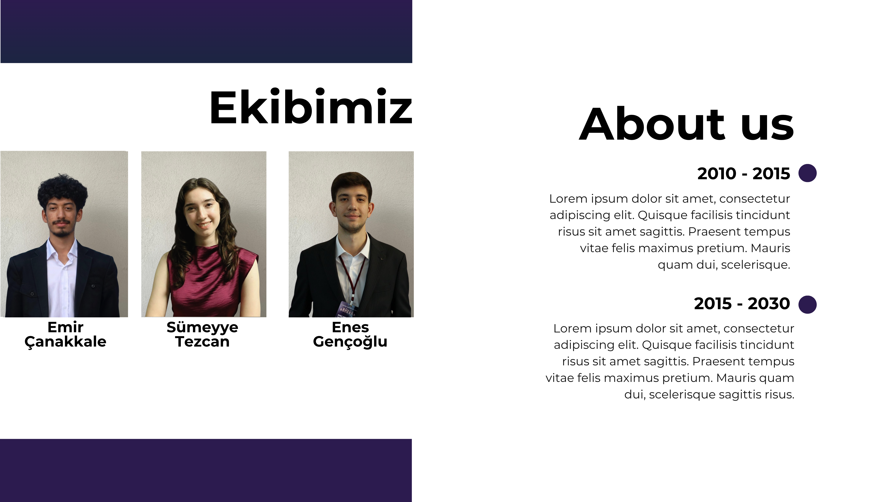

Yüksek potansiyelli üniversite öğrencileri ile lider şirketler arasında güvene dayalı, uzun vadeli profesyonel ilişkiler kuran seçilmiş bir topluluk inşa ediyoruz. Mentorluk, şirket deneyimleri, gelişim içerikleri ve yaşayan alumni ağıyla tasarlanmış bütüncül gelişim yolculuğuna katıl.

Yüksek potansiyelli üniversite öğrencileri ile lider şirketler arasında güvene dayalı, uzun vadeli profesyonel ilişkiler kuran seçilmiş bir topluluk inşa ediyoruz. Merkezine etkinlikleri değil, yaşayan bir topluluğu (community) koyarak öğrencilerin kariyer kararlarını bilinçli vermesini sağlıyoruz.
6 aylık bütüncül gelişim yolculuğu ve mezuniyet sonrasında yıllar boyu devam eden alumni ağıyla; öğrencileri, profesyonelleri ve lider şirketleri aynı ekosistemde buluşturan Türkiye'nin en güçlü profesyonel topluluğunu oluşturmayı ve bu modeli farklı ülkelere ölçeklemeyi hedefliyoruz.
Programımızın merkezinde tekil etkinlikler değil, community (topluluk) yer alır. Amacımız kısa süreli bir deneyim sunmak değil; yıllar boyunca büyüyen güçlü bir profesyonel güven ekosistemi oluşturmaktır.
Yüksek potansiyelli üniversite öğrencilerinin yalnızca bireysel olarak gelişmesini değil; birbirleriyle, mentorlarıyla ve partner şirketlerle yıllar boyunca devam edecek güven ilişkileri kurmasını sağlıyoruz.
Ürünümüz yalnızca bir mentorluk programı değildir. Mentorluk; şirket deneyimleri, topluluk etkileşimi, gelişim içerikleri ve alumni ağıyla birlikte tasarlanmış bütüncül bir profesyonel gelişim yolculuğunun temel araçlarından biridir.
Hedefimiz; üniversite öğrencileri, profesyoneller, alumni ve lider şirketleri aynı ekosistem içinde buluşturan, Türkiye'nin en güçlü profesyonel topluluklarından birini oluşturmaktır.
Her dönem seçilmiş 24 üniversite öğrencisi ve 6–8 lider partner şirketle yürütülen 6 aylık gelişim süreci.
Topluluğa katılım herkes için açık değildir. Belirli değerlendirme süreçlerinden geçen, yüksek potansiyelli 24 üniversite öğrencisi dönem kohortuna kabul edilir.
Her dönem 6–8 partner şirket programa 3–4 deneyimli çalışanını mentor olarak dahil eder. Her öğrenci bir mentorla birebir eşleşir ve ayda en az bir görüşme gerçekleştirir.
Öğrenciler 6 ay boyunca yalnızca kendi mentorlarıyla değil; programdaki tüm partner şirketlerle ziyaretler, vakalar ve buluşmalar aracılığıyla etkileşime geçer.
6 aylık program sonunda katılımcılar mezun olur ve alumni topluluğuna katılarak mentorlarıyla ve ekosistemle bağlarını yıllar boyunca sürdürür.
Program boyunca tüm bileşenler birbirinden kopuk etkinlikler olarak değil, tek bir gelişim yolculuğunun birbirini tamamlayan parçaları olarak tasarlanır.
Deneyimli bir profesyonelle birebir eşleşerek her ay en az bir kez gerçekleşen, kariyer hedeflerini ve kişisel gelişimini merkeze alan güven odaklı görüşmeler.
Partner şirketlerin ofislerini ve çalışma ortamlarını ziyaret ederek farklı kurum kültürlerini, departman dinamiklerini ve günlük işleyişi içeriden gözlemleme imkânı.
Partner şirketlerin gerçek iş dünyası problemleri ve senaryoları üzerinde kohort arkadaşlarınla birlikte çalışarak analitik düşünme ve problem çözme pratiği.
Sektöre yön veren yöneticiler ve liderlerle bir araya gelerek kariyer kırılma noktalarını, karar alma süreçlerini ve vizyonlarını doğrudan dinleme fırsatı.
Profesyonel iletişim becerileri, öz farkındalık, kariyer planlama ve iş hayatına hazırlık konularında düzenlenen interaktif gelişim oturumları.
Yalnızca kendi mentorunla değil; tüm partner şirket temsilcileri, diğer mentorlar, kohort arkadaşların ve alumni üyeleriyle güven bağları kurduğun buluşmalar.
NXT, katılımcılarına yalnızca bilgi değil; kariyerleri boyunca yanlarında taşıyacakları güvenilir bir insan ağı kazandırır.
6 aylık yolculuğu tamamlayan her katılımcı şu somut kazanımlarla mezun olur:
Programdan mezun olan ve alumni ağına katılan bir NXT katılımcısını tanımlayan 9 temel özellik:
Farklı sektörleri ve rolleri tanıdığı için kariyer kararlarını kulaktan dolma bilgilerle değil, bilinçli şekilde verebilir.
Kısa vadeli tanışıklıklar yerine güvene dayalı, uzun soluklu profesyonel ilişkiler kurabilir ve sürdürebilir.
Kurumsal dünyayı yalnızca dışarıdan izlemez; karar mekanizmalarını ve işleyişi içeriden tanır.
Programdaki partner şirketlerle kurduğu temaslar sayesinde farklı şirket kültürlerini bizzat deneyimlemiştir.
Liderlerle, mentorlarla ve akranlarıyla kurduğu etkileşimlerle profesyonel iletişim becerileri üst seviyeye gelişmiştir.
Üstlendiği çalışmalarda ve ilişkilerde güvenilir, öz disiplini yüksek ve sorumluluk sahibi bir profesyonel olarak hareket eder.
Mezuniyet sonrasında da her ihtiyaç duyduğunda danışabileceği güçlü bir mentor ve alumni ağına sahiptir.
Yalnızca bireysel fayda sağlamayı değil; içinde bulunduğu topluluğa ve yeni dönem üyelere katkı vermeyi benimsemiştir.
Geri bildirime ve öğrenmeye açık, kendini sürekli yenileyen gelişim odaklı bir bakış açısı kazanmıştır.
NXT seçilmiş öğrenci topluluğu, başvuru kriterleri ve 6 aylık gelişim süreci hakkında en çok sorulan sorular.
Yeni dönem 6 aylık gelişim yolculuğuna ve topluluğumuza katılmak için başvurunu ilet. Tüm başvurular değerlendirme komitemiz tarafından titizlikle incelenmektedir.